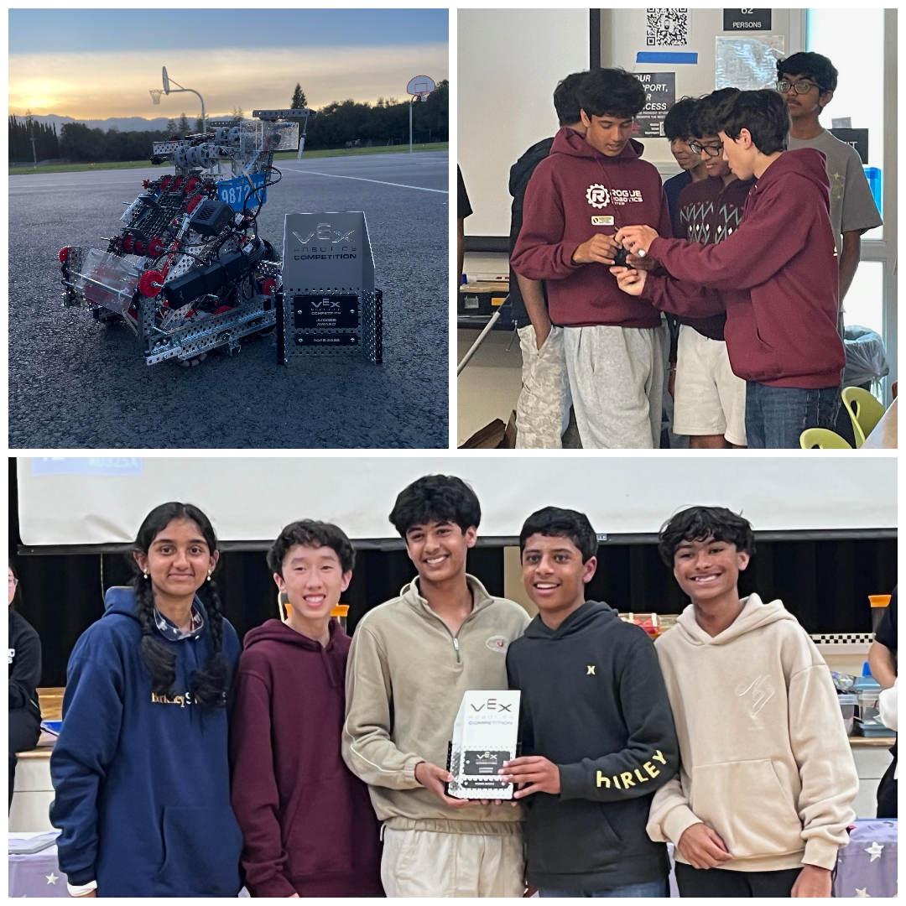
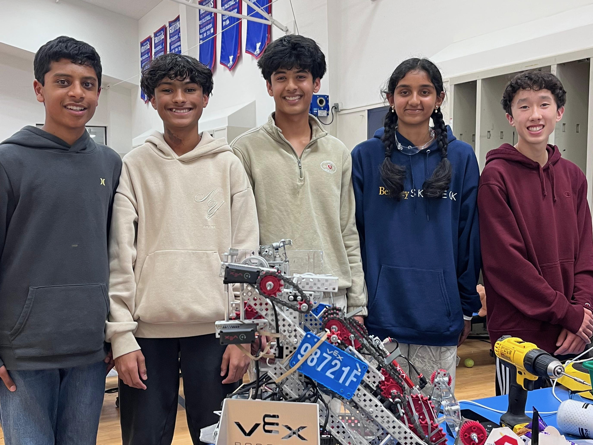

Our Mission
Rogue Robotics is a student-led VEX V5 team focused on engineering, teamwork, and growth. We build competitive robots while creating opportunities for younger students to learn design, coding, strategy, and leadership.



Our History
Founded in late 2024, Rogue Robotics is a fully self-mentored high school team from Fremont, California, striving to push the boundaries of what student-led VEX Robotics teams can accomplish. Starting out as middle schoolers mid-season during the 2024–2025 High Stakes game was a trial-and-error process. We had to learn all the new parts, electronics, and game strategy entirely on our own. Though our rookie year was tough and filled with learning experiences, we came into the 2025–2026 Pushback season determined to turn things around. We started the season ranked near the bottom, barely qualifying for elimination rounds, but through countless hours of iteration both during and outside of meetings, we continually improved. Our hard work paid off when we earned the Judges Award and reached the quarter-finals at the Redwood Competition.
Pushing even further, we traveled to Sacramento, fought our way to the semi-finals, and won the Design Award for our engineering notebook, live-judged interview, and design process; officially earning our spot at the State Championship. Beyond competing, we are committed to making a lasting community impact by inspiring the next generation of engineers.
We hosted a showcase at Thornton Middle School to demonstrate how to form and run a self-guided robotics team, and we recently hosted a STEM summer camp teaching local kids how to build, program, and document their own robots. Today, Rogue Robotics continues to grow independently, aiming to make it to the VEX World Championship while inspiring our local community along the way.
Our Team
Rishab Manas
Captain
I handle all logistics for the team, such as managing our finances and fundraising. I lead all major decisions for the hardware aspect of our robot, and I lead the software division of Rogue Robotics, creating autonomous routines and driver controls.
Colin Southard
Captain
I help lead the team by coordinating timlines. Additionally, I assist in guiding major design decisions that help Rogue Robotics improve and succeed. I help prototpye and test new mechanisms for the robot, and help with outreach efforts.
Shreyas Kanneganti
Hardware
I work on the mechanical side of the robot, helping design, assemble, and improve key systems. Additionally, I test and refine mechanisms to make sure the robot performs reliably in competition.
Siddharth Velayutham
Driver
I serve as the driver for Rogue Robotics, operating the robot during matches and helping the team perform effectively under pressure. Additionally, I work with the hardware side to help tune our robot.
Srikari Mudunuri
Notebook Lead
I manage the team notebook by recording our progress, and making sure our work is clearly presented. I also assist with the software division, helping document and support our programming work throughout the season.
Aatman Shah
Strategy Lead
I lead strategic planning for the team, helping develop match tactics in real time for the driver to follow. I also work with the software team to develop routes for autonomous routines.
Ajay Kolappa
Hardware
I help design, build, and maintain the robot’s mechanical systems, and I make sure our hardware is reliable during practices and matches.